Welkom heten
Jacobs Verzekerd
Ons kantoor past niet meer bij ons merk.
Bekijk project →Samenwerken
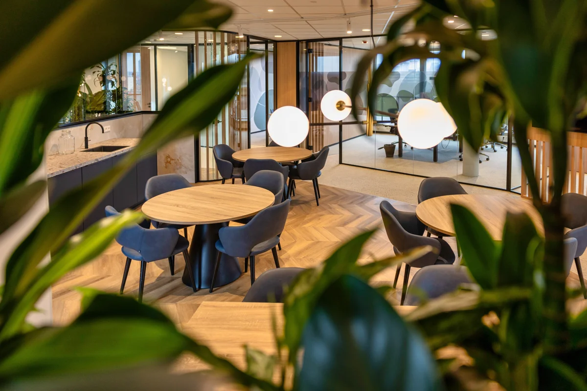
Klik op een foto om alle 11 beelden te bekijken.
De opgave
Het team van Van Breda werkte hybride, maar het kantoor had geen plek waar iedereen samenkwam. Lunch, overleg en presentaties waren verspreid over losse ruimtes. Daardoor voegden kantoordagen weinig toe ten opzichte van thuiswerken.
De vraag was een kantoor dat iets biedt wat thuis niet kan: een plek waar het team elkaar vanzelf tegenkomt, zonder dat de werkplekken en spreekkamers aan rust inleveren.
De aanpak
Het ontwerp draait om een centrale ontmoetingsruimte die gedurende de dag van functie wisselt: 's ochtends koffie en kort overleg, 's middags lunch, tussendoor een presentatie voor het hele team. Spreekkamers en werkplekken liggen eromheen, verbonden door glazen wanden. Zo is de ontmoetingsruimte het hart van het kantoor, in plaats van een kantine in een hoek.
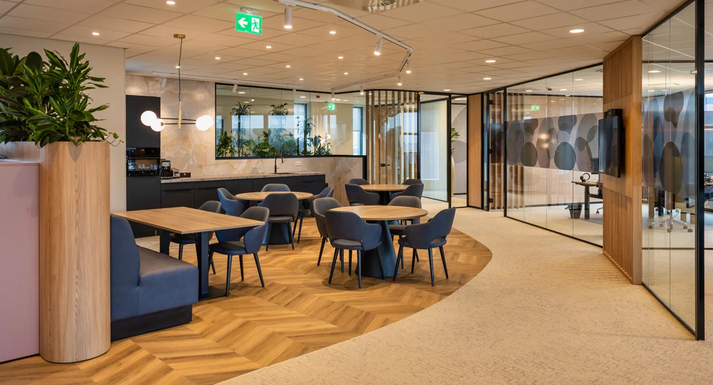
Ontwerpkeuzes
Een vloer die de zone tekent. Een visgraatvloer in houtlook ligt in een vloeiende, gebogen vorm in het tapijt. De ontmoetingsruimte is daardoor direct herkenbaar, zonder wanden. Het tapijt eromheen vormt de looproute en dempt het geluid richting de werkplekken.
Verschillende plekken binnen één ruimte. Ronde tafels voor lunch en informeel overleg, een lange bank tegen een houten plantenbak voor wie wat beschutter wil zitten. Een scherm op de lamellenwand maakt presentaties aan het hele team mogelijk.
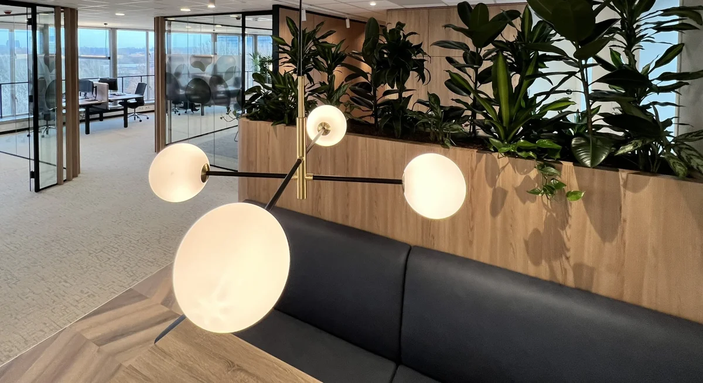
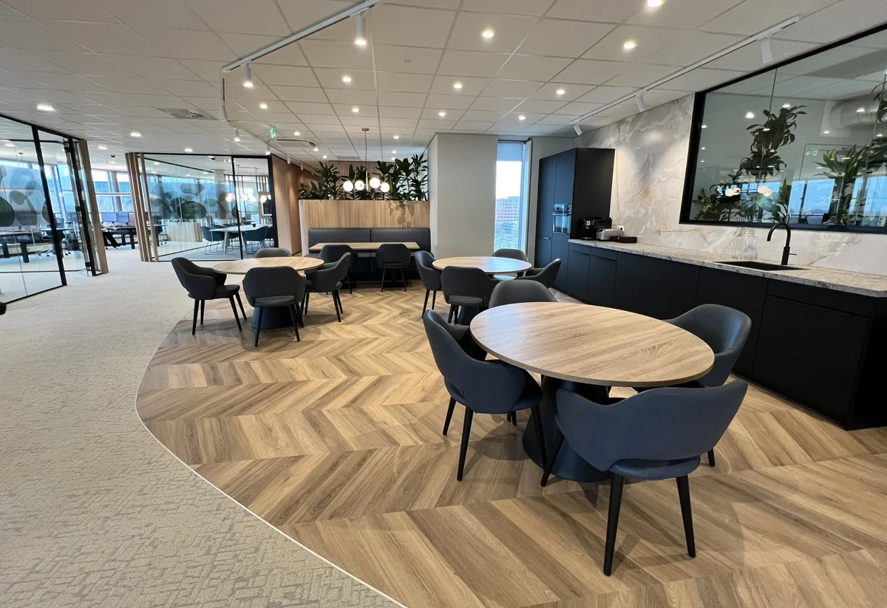
Ontmoeting en privacy
Een pantry die uitnodigt. Donkere kasten, een werkblad in natuursteenlook en een marmerlook achterwand geven de pantry de uitstraling van een keuken in plaats van een koffiehoek. Dat maakt de ruimte geschikt om echt samen te lunchen.
Glas met een organisch motief. De spreekkamers zijn van glas, met folie in organische, kiezelvormige vlakken. Die geeft privacy op ooghoogte en houdt toch zicht op de ontmoetingsruimte. Hetzelfde motief komt terug in de wandgrafiek van de kleinere spreekkamer.
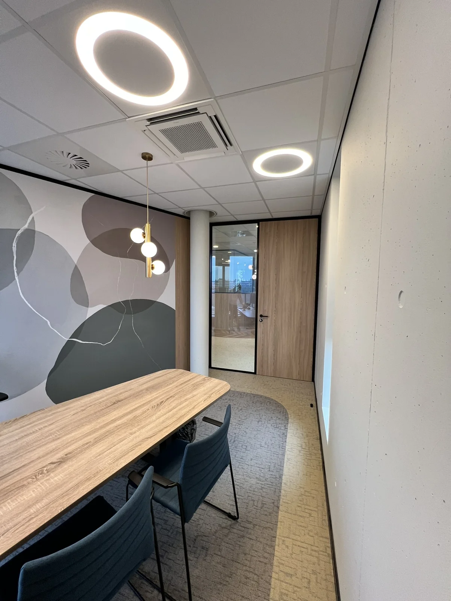
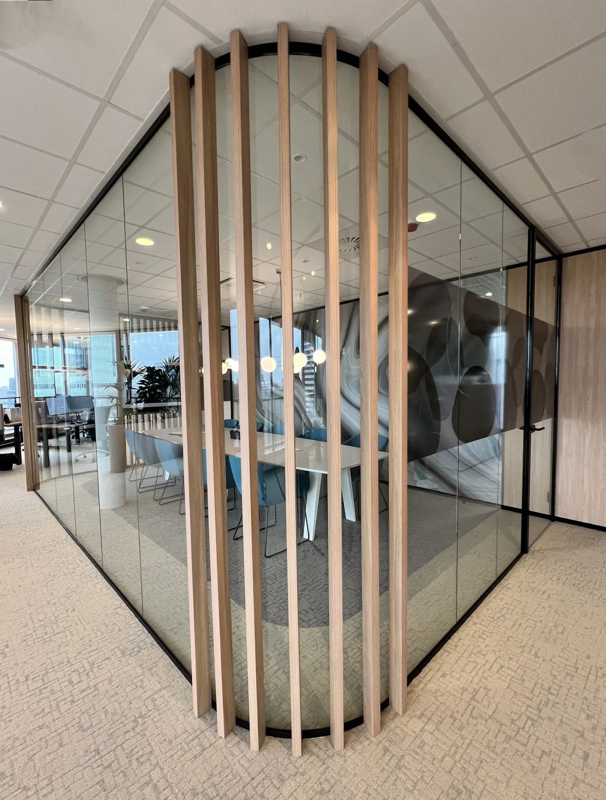
Vormen en identiteit
Ronde vormen in plaats van harde hoeken. Gebogen glazen hoeken met houten lamellen, een gebogen vloerovergang en afgeronde tapijtvlakken in de spreekkamers. De zachte vormentaal maakt het kantoor toegankelijk en minder zakelijk dan een klassiek verzekeringskantoor.
Een boardroom met karakter. De grote spreekkamer krijgt een wandvullende grafiek in een vloeiend marmerpatroon in blauw, grijs en brons. Het geeft de ruimte een eigen identiteit voor klantgesprekken en teambijeenkomsten.
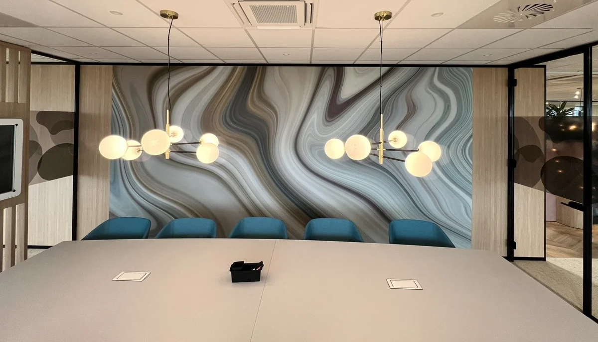
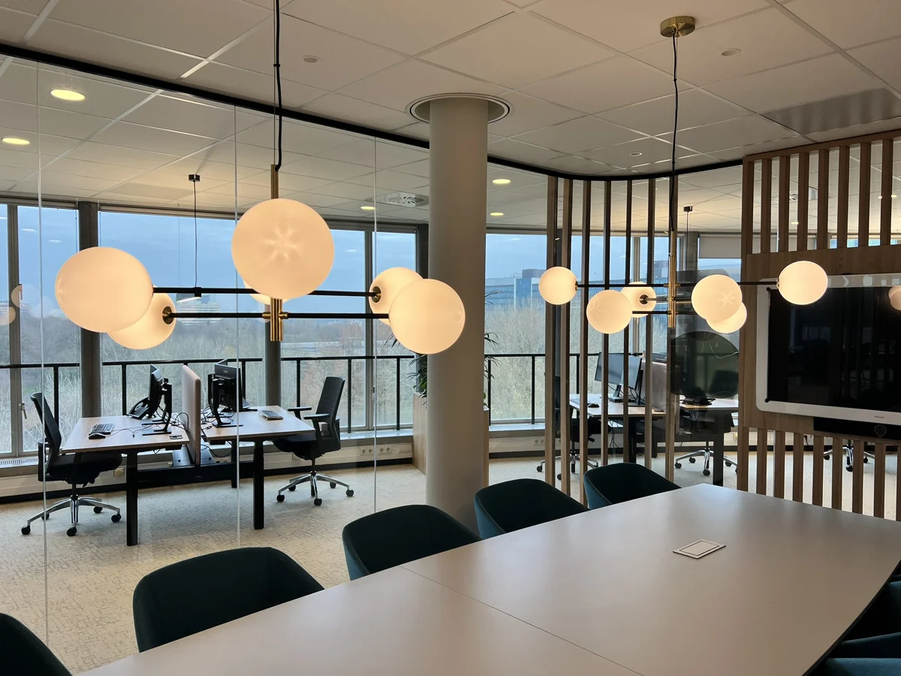
Werkplekken en licht
Rust aan de gevel. De werkplekken liggen langs de glazen gevel, met daglicht en uitzicht. Zit-sta-bureaus, akoestische schermen in een warme roze tint en houten plantenbakken als zonering zorgen voor rust op afstand van de ontmoetingsruimte.
Licht als verbindend element. Bolvormige hanglampen met messing details keren terug in de ontmoetingsruimte en de spreekkamers. Ze verbinden de ruimtes en geven het kantoor een warme, huiselijke sfeer.
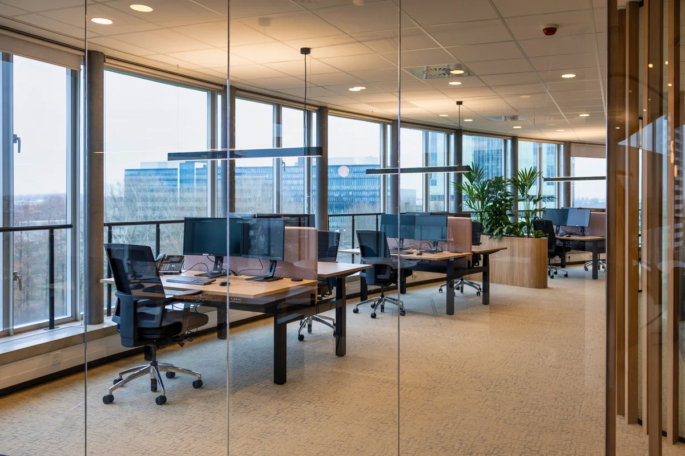
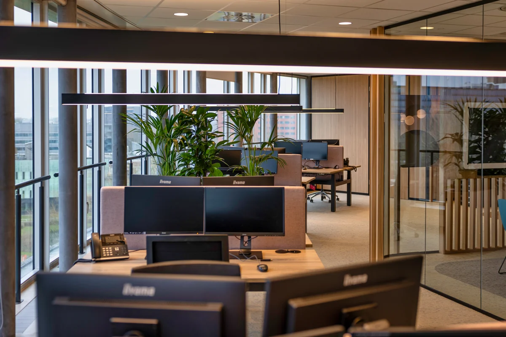
Het resultaat
Het kantoor heeft nu een hart. Lunchen, overleggen en presenteren gebeurt op één centrale plek, waar het team elkaar vanzelf tegenkomt. De spreekkamers en werkplekken eromheen blijven rustig en zijn via het glas toch verbonden. Kantoordagen hebben weer een middelpunt, en daarmee een reden om te komen.
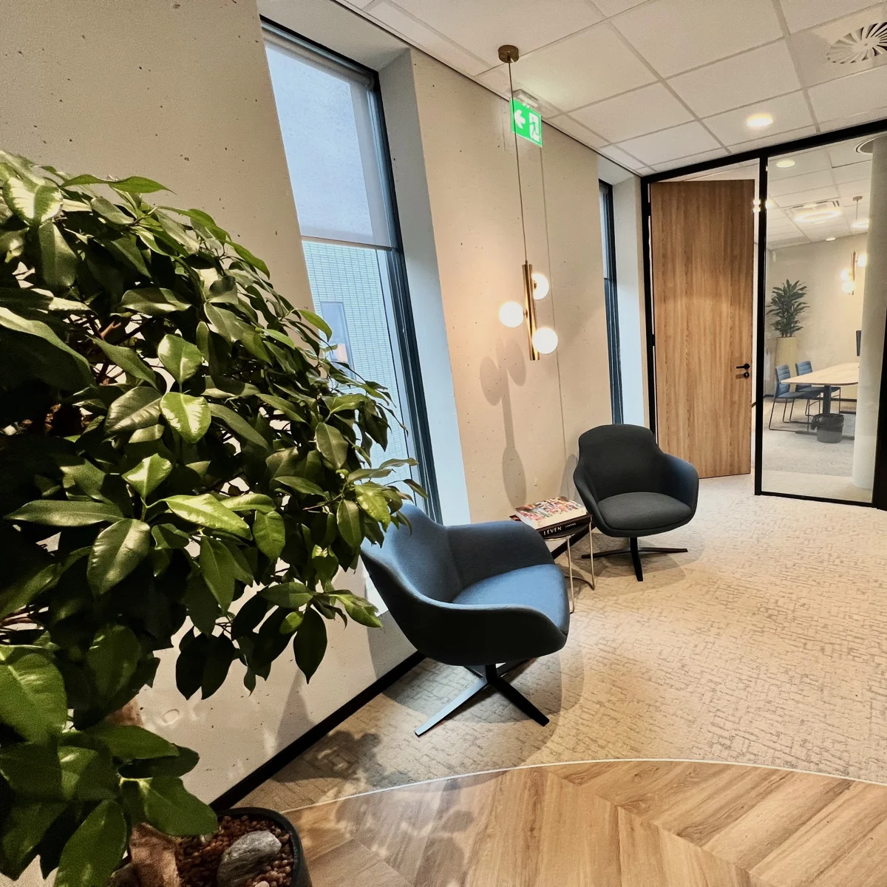
Verdieping
Bij hybride werken concurreert het kantoor met thuis. Een rustig bureau heeft iedereen thuis ook, samenkomen niet. Daarom loont het om minder ruimte te geven aan vaste werkplekken en meer aan ontmoeting. Een centrale ruimte die meerdere functies combineert, werkt beter dan losse kantines en vergaderzalen: hoe meer momenten er op één plek samenkomen, hoe vaker mensen elkaar treffen. Glas en open zonering zorgen dat die ontmoeting voelbaar is in het hele kantoor, zonder de rust op de werkplekken te verstoren.
Andere vragen, andere projecten
Welkom heten
Ons kantoor past niet meer bij ons merk.
Bekijk project →
Concentreren
Er is te veel onrust en te weinig concentratie.
Bekijk project →